Directories¶
Directories are available from the top menu or from the menu. It depends on the current screen.
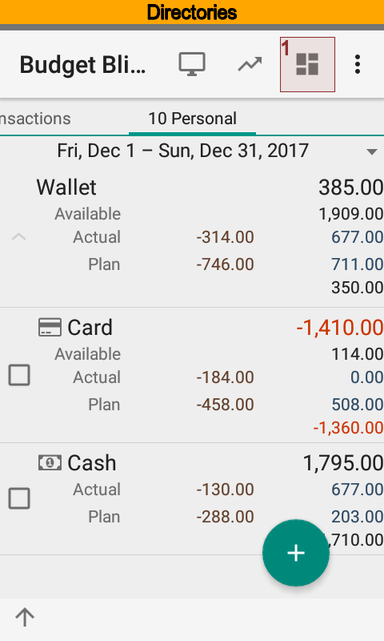 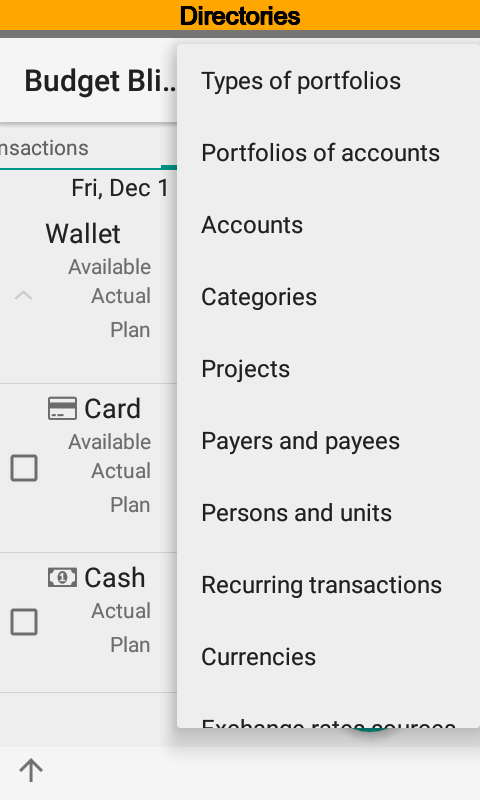{kind=link}
{kind=link}
Portfolio Types¶
Portfolio types are used to separate dimensions between your activities. For example, one set of categories is used for personal finance and another set is used for business finances. When you edit a transaction its dimensions (category, payer or payee, project, and person) correspond to the certain type of portfolio.
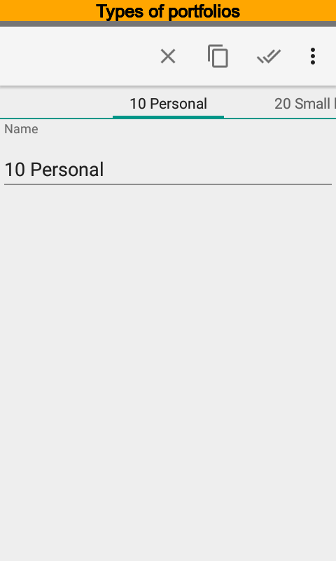 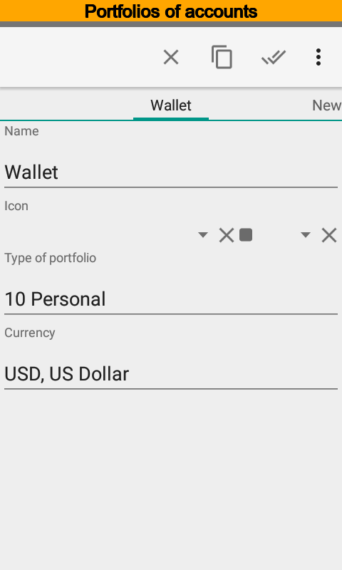 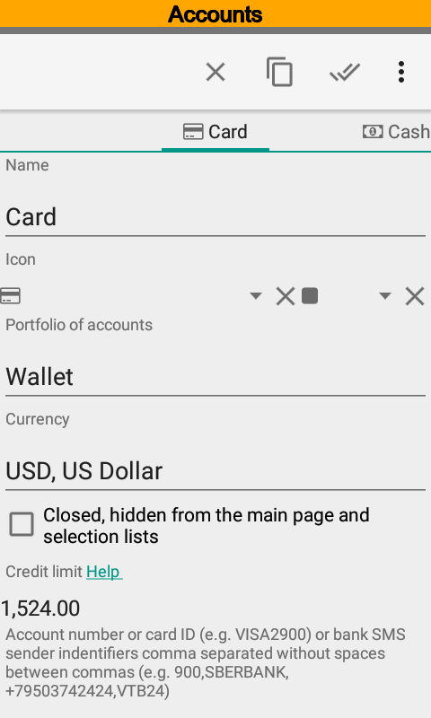{kind=link}
{kind=link}
{kind=link}
It will be useful to pay attention to the Universal type of portfolio. Its name is 00 None for old versions. Dimensions of this type of portfolio are always available. For example Transfer category can be selected in any transaction regardless selected account and connected portfolio type.
Note
Dimensions of the Universal type of portfolio are always available
Portfolios¶
Portfolio is a group of accounts. Portfolio has own currency. The Budget Blitz for Android uses a portfolio currency to show financial highlights. Use the directory to apply currency rates.
Accounts¶
Account is a bank account, debit or credit card, investment account, cash, or something else. Account has own currency. It may be differ from a currency of portfolio.
Identity of an account is used for transactions import, see Data Import. You can put several identities. Use the comma to separate one identity from another. Usually card or account number is used for identity. Phone number, or SMS sander name, or identity of push notifications package can be considered as identity as well.
Key phrases are also used for transactions import. For transfers source account is detected by identity and target account is detected by key phrases. Key phrases are used for transfers only.
For example you have SMS from bank:
Visa2900 card. Cash withdraw 200.00 USD ATM 5412. Balance: 274.26 USD. 25/03/14,15:00:00.
Visa2900 is identity of the Card account, ATM is the key phrase for the Cash account. Since SMS pushed the app Budget Blitz for Android will create two transactions, debit transaction on Card account and credit transaction on Cash account.
SMS import tune establishes the algorithm of transactions detection. See more details in the Advanced Import SMS and Push Notifications Setting.
Default values of payers and payees, projects and persons are used when you create transaction and import transactions, Also the app uses this values for teamwork on data exchange.
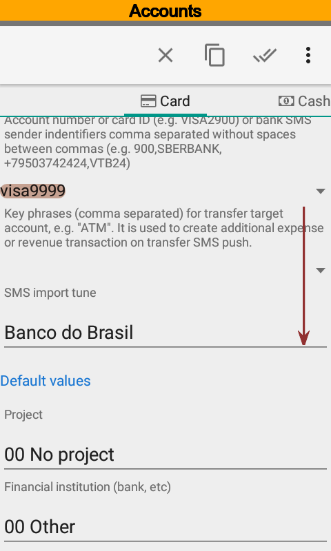 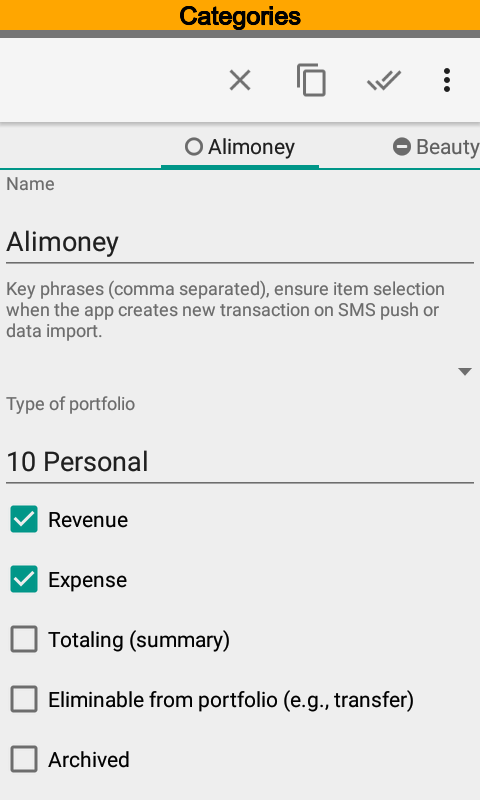 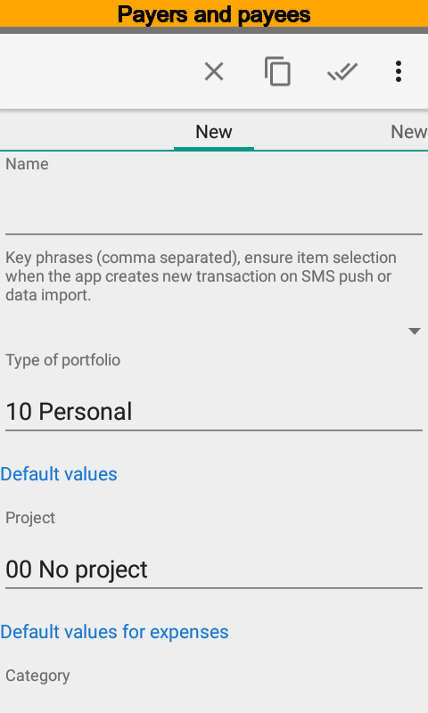{kind=link}
{kind=link}
{kind=link}
Categories¶
directory plays the main role for the classification of transactions. A category may a set of options, Revenue, Expense, Totaling (summary), technical, Eliminable and Archived.
Categories sorting order under transaction editing depends on Revenue and Expense options. For a revenue transaction revenue categories are placed at the beginning and then expense ones placed and vice versa.
A category may be neither revenue nor expense. In that case the category is technical. For instance technical category is used for credit limit changing. For that transaction there is no money turnovers for a card owner but nevertheless balance is changed. See more details about credit limit at questions and answers (How to setup credit limit for new or existed account?).
Since a category has Totaling (summary) option you can use and reports to get there balance.
Sometimes you need to eliminate transactions from revenues and expenses. Usually it is transfer transactions. Use categories with Eliminable option for them. The app has standalone totals at the main screen and transactions list for transfers and other transaction with categories with Eliminable option.
The app uses key phrases to find an item when importing transactions. You can set several comma separated key phrases.
It is possible to define several categories for a transaction.
Once the app installed the directory of categories has default items. It’s up to you edit, add, or delete them.
Payers and Payees¶
Contrary part of transaction is payer or payee. This is often called a contractor. Only transfer transactions have no contractor. Bat all other transactions have. Transaction have only one contractor.
Projects¶
You can use projects to account vacations, startups, housing projects and so on. Transaction may have several projects.
The app uses key phrases to find an item when importing transactions. You can set several comma separated key phrases.
Persons¶
You can use persons to account family members, company staffers and so on. Transaction may have several projects.
The app uses key phrases to find an item when importing transactions. You can set several comma separated key phrases.
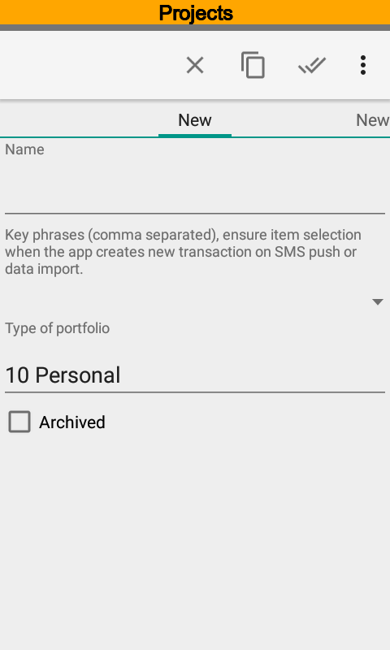 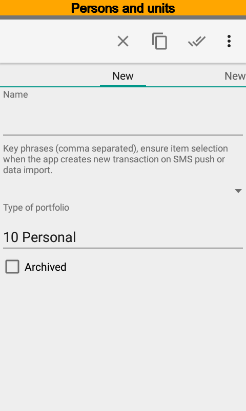 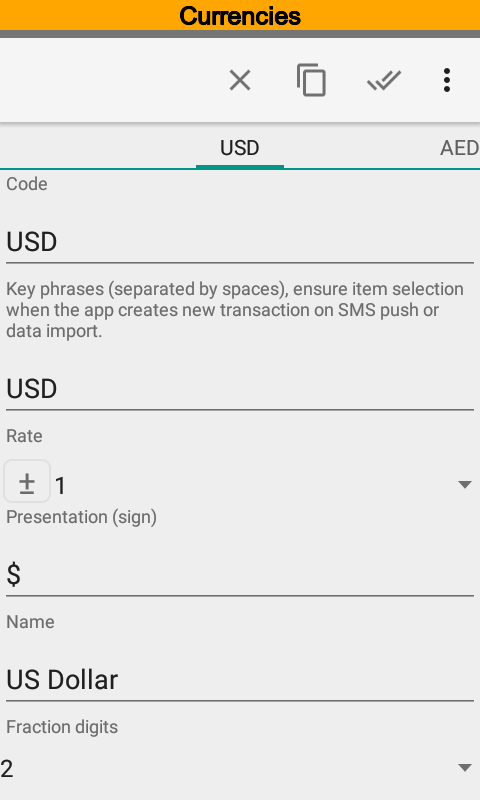{kind=link}
{kind=link}
{kind=link}
Currencies¶
Once the app installed it contains almost all world currencies. Of course you can add a new one.
Currency rates are used for calculate financial highlights. You can set rates manually or load from internet resources. Available sources are European Central Bank, Russian Central Bank (currencies and metals), Bank of Canada, National Bank of the Republic of Belarus, National Bank of the Republic of Kazakhstan, Bank of Israel, BitPay (BTC rates), Poloniex (cryptocurrencies trading market).
Let author know if you need more, see Feedback.